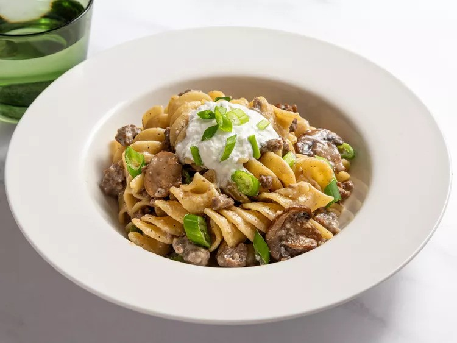

Ground Beef Stroganoff Noodles

Description:
A shortcut version of the classic beef stroganoff. All done in one single pan.
This dish is the ultimate comfort food with delicious ground beef, egg noodles, and mushrooms.
Beef Stroganoff is a classic and savory dish that features tender strips of beef cooked in a rich and creamy mushroom sauce.
The beef is typically seasoned, seared until browned, and then simmered in a flavorful blend of onions, mushrooms, and beef broth.
This comforting dish is often served over egg noodles or rice, creating a satisfying and hearty meal with a perfect balance of savory flavors and creamy texture.
Ingredients:
- 1 tablespoon unsalted butter
- 1 tablespoon vegetable olive
- 1 cup thinly sliced mushrooms
- 1 teapsoon salt, plus more to taste
- 1/2 cup diced onion
- 1 pound ground beef
- freshly ground black pepper
- 1 pinch cayenne pepper
- 2 cloves minced garlic
- 1 1/3 tablespoons flour
- 2 1/2 cups beef broth
- 1 cup water
- 2 1/2 cups egg noodles
- 1/2 cup sour cream
- 2 tablespoons fresh sliced green onions